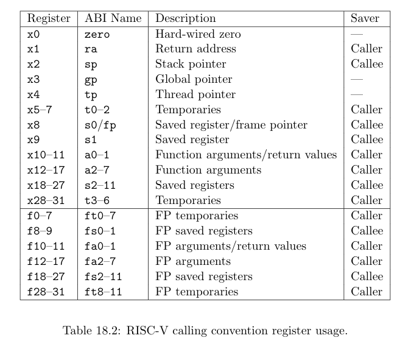

编程作业 思路 rCore 的第一个实验，主要是为了熟悉如何进行内核编程，实现起来比较简单。
要求实现一个系统调用，填充传入的 TaskInfo 结构体已获取当前任务的一些信息，包含三个字段：任务状态、任务使用的系统调用及调用次数、系统调用时刻距离任务第一次被调度时刻的时长（单位 ms）。
首先是任务状态，这个比较简单，直接查看当前任务的任务控制块的字段值即可。
对于系统调用次数，可以在任务控制块中添加新的字段来存储相关信息，例如按提示所说，一个长度为 MAX_SYSCALL_NUM 的整型数组。在函数 syscall/mod.rs:syscall 中，在内核对用户态传入的系统调用号进行分发处理前，增加对应的系统调用桶的计数。注意，由于本次系统调用 sys_task_info 也要进行计数，因此不能在执行了特定的系统调用后再来增加计数，否则本次 sys_task_info 系统调用次数将无法被统计。
最后是距离任务第一次被调度时刻的时长，一种实现方式是：为任务控制块添加新的字段：time，表示任务第一次被调度的时间。先为 time 设定一个初始值（例如 0），表示该值未被更改过，每当一个任务即将被调度时（如 TASK_MANAGER.run_next_task() 进行任务切换时），查看 time 值，判断是否未被更改：如果是，则赋予当前时间；否则，不做任何操作。这样，就成功保存了任务初次被调度的时刻。在调用 sys_task_info 时，将当前时间减去保存的初次被调度时间，即为时长，注意单位为毫秒。
代码 由于代码是直接在原项目代码的基础上进行修改，因此为了查看方便，本次及之后实验的代码将以 git diff 的形式展现，加号（绿色）代表添加的代码，减号（红色）代表删除的代码。
1 2 3 4 5 6 7 8 9 10 11 12 13 14 15 16 17 18 19 20 21 22 23 24 25 26 27 28 29 30 31 32 33 34 35 36 37 38 39 40 41 42 43 44 45 46 47 48 49 50 51 52 53 54 55 56 57 58 59 60 61 62 63 64 65 66 67 68 69 70 71 72 73 74 75 76 77 78 79 80 81 82 83 84 85 86 87 88 89 90 91 92 93 94 95 96 97 98 99 100 101 102 103 104 105 106 107 108 109 110 111 112 113 114 115 116 117 118 119 120 121 122 123 124 125 126 127 128 129 130 131 132 133 134 135 136 137 138 139 140 141 142 143 144 145 146 147 148 149 150 151 152 153 154 155 156 @@ -26,8 +26,13 @@ mod process; use fs::*; use process::*; + +use crate::task::inc_syscall_times; + /// handle syscall exception with `syscall_id` and other arguments pub fn syscall(syscall_id: usize, args: [usize; 3]) -> isize { + // increase syscall times before handle specific syscall + inc_syscall_times(syscall_id); match syscall_id { SYSCALL_WRITE => sys_write(args[0], args[1] as *const u8, args[2]), SYSCALL_EXIT => sys_exit(args[0] as i32), @@ -1,8 +1,9 @@ //! Process management syscalls + use crate::{ config::MAX_SYSCALL_NUM, - task::{exit_current_and_run_next, suspend_current_and_run_next, TaskStatus}, - timer::get_time_us, + task::{exit_current_and_run_next, get_current_tcb, suspend_current_and_run_next, TaskStatus}, + timer::{get_time_ms, get_time_us}, }; #[repr(C)] @@ -53,5 +54,19 @@ pub fn sys_get_time(ts: *mut TimeVal, _tz: usize) -> isize { /// YOUR JOB: Finish sys_task_info to pass testcases pub fn sys_task_info(_ti: *mut TaskInfo) -> isize { trace!("kernel: sys_task_info"); - -1 + let cur_tcb = get_current_tcb(); + // labour in vain! The status must be Running + let status = cur_tcb.task_status; + let syscall_times = cur_tcb.syscall_times; + let time = get_time_ms() - cur_tcb.time; + + unsafe { + *_ti = TaskInfo { + status, + syscall_times, + time, + } + } + + 0 } @@ -14,9 +14,11 @@ mod switch; #[allow(clippy::module_inception)] mod task; -use crate::config::MAX_APP_NUM; + +use crate::config::{MAX_APP_NUM, MAX_SYSCALL_NUM}; use crate::loader::{get_num_app, init_app_cx}; use crate::sync::UPSafeCell; +use crate::timer::get_time_ms; use lazy_static::*; use switch::__switch; pub use task::{TaskControlBlock, TaskStatus}; @@ -54,6 +56,8 @@ lazy_static! { let mut tasks = [TaskControlBlock { task_cx: TaskContext::zero_init(), task_status: TaskStatus::UnInit, + syscall_times: [0u32; MAX_SYSCALL_NUM], + time: 0usize, }; MAX_APP_NUM]; for (i, task) in tasks.iter_mut().enumerate() { task.task_cx = TaskContext::goto_restore(init_app_cx(i)); @@ -122,6 +126,11 @@ impl TaskManager { let mut inner = self.inner.exclusive_access(); let current = inner.current_task; inner.tasks[next].task_status = TaskStatus::Running; + // if the task is being called for the first time, + if inner.tasks[next].time == 0usize { + // then set it to the current time + inner.tasks[next].time = get_time_ms(); + } inner.current_task = next; let current_task_cx_ptr = &mut inner.tasks[current].task_cx as *mut TaskContext; let next_task_cx_ptr = &inner.tasks[next].task_cx as *const TaskContext; @@ -135,6 +144,24 @@ impl TaskManager { panic!("All applications completed!"); } } + + /// Get task control block + pub fn get_current_tcb(&self) -> TaskControlBlock { + let inner = self.inner.exclusive_access(); + let current = inner.current_task; + inner.tasks[current].clone() + } + + /// increase syscall times + pub fn inc_syscall_times(&self, syscall_id: usize) -> bool { + if syscall_id >= MAX_SYSCALL_NUM { + return false; + } + let mut inner = self.inner.exclusive_access(); + let current = inner.current_task; + inner.tasks[current].syscall_times[syscall_id] += 1; + true + } } /// Run the first task in task list. @@ -169,3 +196,13 @@ pub fn exit_current_and_run_next() { mark_current_exited(); run_next_task(); } + +/// Get current task control block +pub fn get_current_tcb() -> TaskControlBlock { + TASK_MANAGER.get_current_tcb() +} + +/// increase syscall times +pub fn inc_syscall_times(syscall_id: usize) -> bool { + TASK_MANAGER.inc_syscall_times(syscall_id) +} \ No newline at end of file @@ -1,6 +1,7 @@ //! Types related to task management use super::TaskContext; +use crate::config::MAX_SYSCALL_NUM; /// The task control block (TCB) of a task. #[derive(Copy, Clone)] @@ -9,6 +10,10 @@ pub struct TaskControlBlock { pub task_status: TaskStatus, /// The task context pub task_cx: TaskContext, + /// The syscall times + pub syscall_times: [u32; MAX_SYSCALL_NUM], + /// The first time the task was scheduled + pub time: usize, } /// The status of a task
time 的设置有一点小 bug，就是第一个被调度任务的 time 应该在 run_first_task 中设置，否则它的 time 将会晚一个调度周期，testcase 没测出来。。。写博客时才注意到，懒得改了😓
问答作业 t1 Q: 正确进入 U 态后，程序的特征还应有：使用 S 态特权指令，访问 S 态寄存器后会报错。 请同学们可以自行测试这些内容（运行 三个 bad 测例 (ch2bbad *.rs) ）， 描述程序出错行为，同时注意注明你使用的 sbi 及其版本。
A: 略。
t2 深入理解 trap.S 中两个函数 __alltraps 和 __restore 的作用，并回答如下问题：
Q1: L40：刚进入 __restore 时，a0 代表了什么值。请指出 __restore 的两种使用情景。
A1: a0 代表了内核栈的栈指针，即 __alltraps 保存的上下文的首地址。
情景一：表示内核第一次从内核态切换到用户态（或者说将 CPU 所有权转交给用户程序），在初始化或加载应用程序时，内核通过 __restore 恢复必要的状态。
情景二：当 call trap_handler 执行结束后，程序计数器指向它的下一条指令，即 __restore 的起始地址，表示 Trap 处理完成，将恢复 Trap 时的上下文状态，返回用户态。
Q2: L43-L48：这几行汇编代码特殊处理了哪些寄存器？这些寄存器的的值对于进入用户态有何意义？请分别解释。
1 2 3 4 5 6 ld t0, 32*8(sp) ld t1, 33*8(sp) ld t2, 2*8(sp) csrw sstatus, t0 csrw sepc, t1 csrw sscratch, t2
A2: 特殊处理了 t0、t1、t2、sstatus、sepc、sscratch 寄存器。
t0、t1、t2 用来暂存从内核栈中读取的之前保存的 CSR 寄存器的值，再使用 csrw 指令将暂存值写入对应的 CSR 寄存器中。
其中 sstatus 的 SPP 字段给出 Trap 发生之前 CPU 处在哪个特权级等信息，sepc 当 Trap 是异常时（exception）记录之前执行的最后一条指令地址，sscratch 则存储着用户栈的栈指针，用于在 sret 返回用户态前使用 csrrw 指令将当前栈指针从内核栈切换到用户栈。
Q3: L50-L56：为何跳过了 x2 和 x4？
1 2 3 4 5 6 7 ld x1, 1*8(sp) ld x3, 3*8(sp) .set n, 5 .rept 27 LOAD_GP %n .set n, n+1 .endr
A3: 如下图所示，x2 即 sp 寄存器，保存了内核栈的栈指针。而 x4 寄存器为线程寄存器，在本实验中不会用到。

Q4: L60：该指令之后，sp 和 sscratch 中的值分别有什么意义？
A4: 该指令的作用是先将 sscratch 的值读取到 sp 中，再将 sp 的值写入 sscratch 中，这两个操作是在同一周期内完成的，无需中间寄存器的参与，作用相当于 swap(sp, sscratch). 在返回用户态之前交换 sp 和 sscratch 的值，即将当前栈指针由用户栈切换到内核栈。
Q5: __restore：中发生状态切换在哪一条指令？为何该指令执行之后会进入用户态？
A5: 状态切换发生在 sret，该指令会负责从栈中恢复之前保存的程序计数器值，并更新特权级相关的寄存器（如 mstatus）。
Q6: L13：该指令之后，sp 和 sscratch 中的值分别有什么意义？
A6: 与 L60 相反，作用是将当前栈指针由内核栈切换到用户栈，便于后续的 Trap 处理。
Q7: 从 U 态进入 S 态是哪一条指令发生的？
A7: 根据 Trap 的类型不同而定。对于系统调用而言，是 ecall 指令，对于其它的异常情况（如非法操作、页面缺失等）则是在硬件检测到后自动触发异常，从而进入内核态。

 微信
微信 支付宝
支付宝